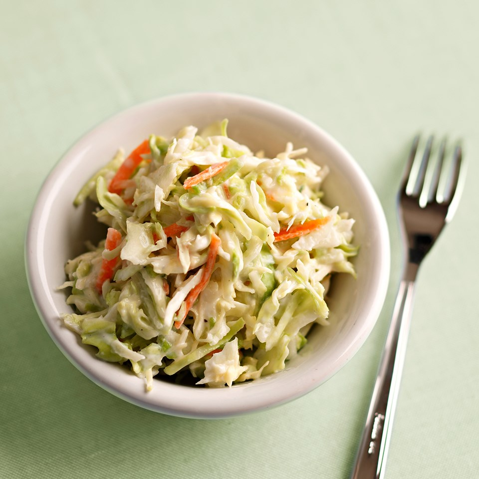

Caraway Coleslaw
Ingredients
- 3 tablespoons cider vinegar
- ¾ teaspoon caraway seeds, crushed
- ½ teaspoon dry mustard
- ½ teaspoon prepared horseradish
- ¼ teaspoon salt
- ¼ teaspoon ground pepper
- 1 (6 ounce) container plain low-fat yogurt
- 3 tablespoons light dairy sour cream
- 2 teaspoons sugar (see Tip)
- 1 (16 ounce) package coleslaw mix
Preparations
- Combine vinegar and caraway seeds in a small bowl. Cover and let stand for 15 minutes; strain through a fine mesh strainer into a large bowl. Discard the seeds. Add mustard, horseradish,
salt, and pepper to the strained mixture; whisk until well mixed.
- Whisk in yogurt, sour cream, and sugar. Add coleslaw mix; gently stir to coat. Cover with plastic wrap or foil and chill for 1 to 8 hours before serving
(the volume will decrease as the salad chills). Stir before serving.
- Tip: If using a sugar substitute, we recommend Splenda Granular, Equal Spoonful or packets, or Sweet 'N Low bulk or packets. Follow package directions to use product amount equivalent to 2 teaspoons sugar. Nutrition Per Serving
with Substitute: Same as below, except 39 cal., 5 g carb. Carb Choices: 0.